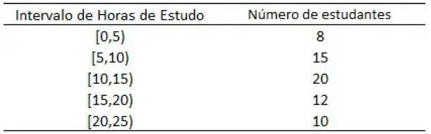

3.1 Amplitude:
APRESENTAÇÃO
CONTEÚDO
EXERCÍCIOS PRÁTICOS
EXERCÍCIOS RESOLVIDOS
Questão 2:
Uma pesquisa foi realizada para registrar o número de horas de estudo semanal de estudantes. Os dados agrupados em intervalos são apresentados na tabela abaixo:

A amplitude das classes é de
A) 5 horas
B) 10 horas
C) 15 horas
D) 20 horas
E) 25 horas
⭠ VOLTAR
PRÓXIMO ⭢